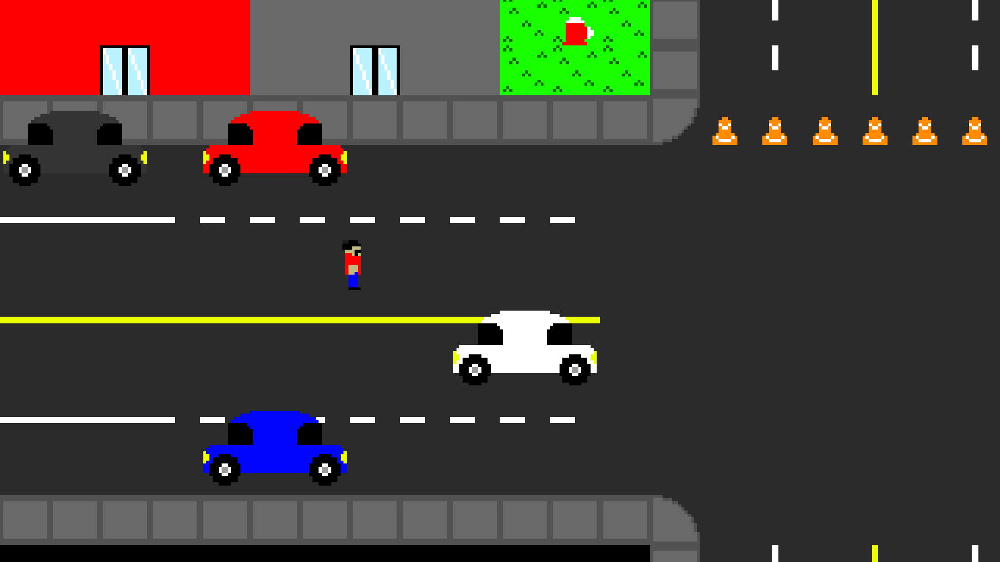
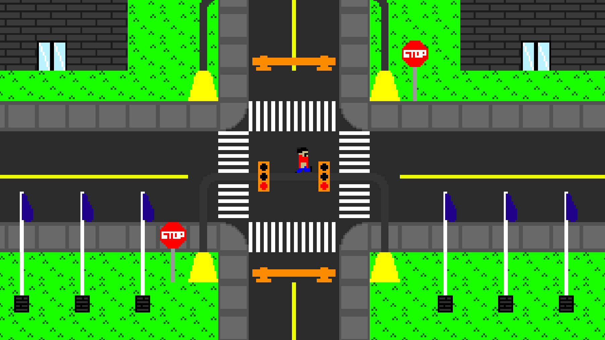

Yesterday, the presentation for Update 1.2.0 was posted. If you prefer to read the news, or you think this article will have extra info (very possible, I'm writing this before production started on the video), then this is for you. We'll start with the smaller content updates.
There is now a farm statue that allows you to gamble, although mostly everyone probably saw this coming. The odds of a return are not great, it's about 50/50 that you'll even win anything, and from there it's a 25% chance you still lose, but it's a good way to burn materials if you have them just laying around.
If the spell is called invincible then why can I see it? Activate this to take no dmamage from enemies for ten seconds, however, some attacks will still damage the player, so this is best used if there is a horde and you just want to get to the end.
The mucklands is the next area to traverse. It is oh so green, but incredibly crimson. You'll see when the update drops July 31st. It's something much different than what has been seen before, you even ____ ___ _______ ___ ______ ____.
The Next Update, 1.3.0
I'm currently (as of typing, this will be different) working on the main city seen in today's trailer. It was just a small glimpse, and it was only the start of the city.

This was a test of how some buildings would look.

This is a much grander test, something that is more meant to see how the buildings could work.
At this stage, the update is progressing nicely, and will likely be finifhed by the time 1.2.0 comes out and ready for testing, then Update 2.0.0 can begin work.
There is no planned 1.2.1 bug fix, however, if there are game breaking bugs, then there will have to be a patch issued.
The update is out on Friday, I hope you will like it!
EDIT FOR 1.3.0 PROGRESS
1.3.0 is now considered finished, and a patch is being worked on for the game shortly after 1.3.0 is released. There are many bugs, but the player should not easily encounter any of them.